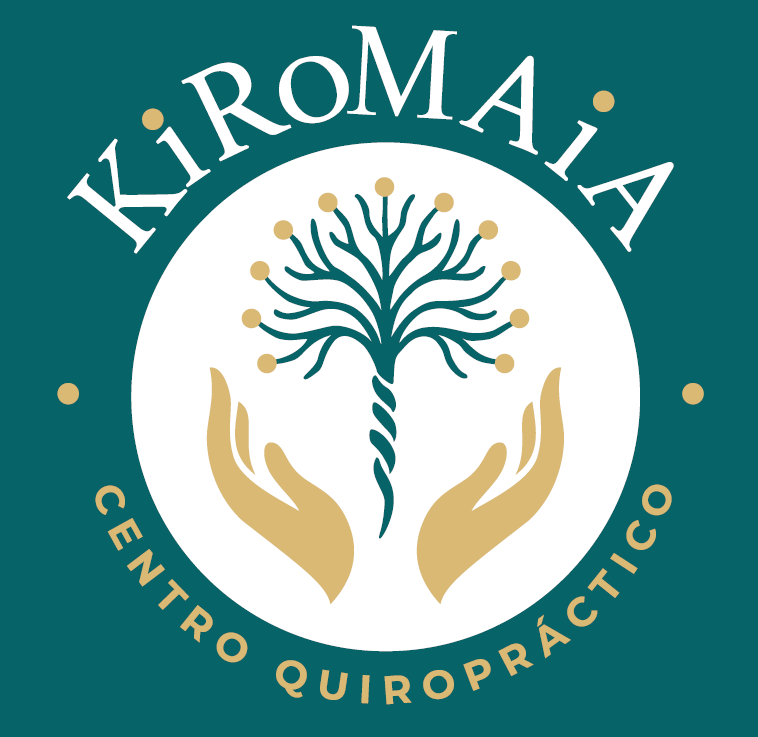

Guardar contacto
Selecciona la consulta que deseas añadir a tu agenda.
KiroMaia · Nigrán
Rúa Alcalde Manuel Alonso 6
KiroMaia · Vigo
Av. García Barbón 23 · 2º C-D
KiroMaia · Ourense
Rúa Concordia 2 bis